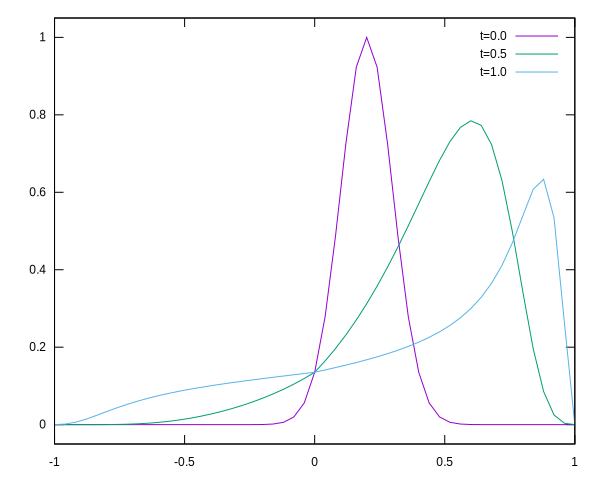

Some equations
Consider the advection equation,
\[\partial_t u + a \partial_x u = 0.\](1)
An upwind scheme solves for this equation by biasing towards values from which the flow is comming. We have two cases,
\[\begin{cases} (u_{(i, j+1)} - u_{(i, j)})/{\Delta t} + a (u_{(i, j)} - u_{(i-1, j)})/{\Delta x} = 0 & {\rm for} \ a > 0\\ (u_{(i, j+1)} - u_{(i, j)})/{\Delta t} + a (u_{(i+1, j)} - u_{(i, j)})/{\Delta x} = 0 & {\rm for} \ a < 0\\ \end{cases}.\](2)
This reduces to
\[u_{(i, j+1)} = u_{(i, j)} - c \Delta u_{\pm},\](3)
where \(c = (a\Delta t / \Delta x)\), and \(\Delta u_{\pm}\) is the finite difference component for the spacial derivatives.
Let’s take \(a\) to be a function \(a(x) = \sin(x)\).
Implementation
We have a grid of GRID_SIZE intervals,
TIME_STEPS number of steps between \(t=0.0\) and \(t=1.0\), an initial condition of an offset
gaussian, and an advection factor of \(1.0\).
«advection-constants»
const GRID_SIZE = 50
const TIME_STEPS = 100
const SIGMA0 = 0.1
const ADVECTION = 1.0The scheme depends on the value of \(a\) in equation 1. We use a function that assumes \(a\) is a running parameter.
«upwind-delta-y»
function delta_y(y::Array{T}, a) where T
d = Array{T}(undef, length(y))
for (i, a) in enumerate(a)
if i == 1 || i == length(y)
d[i] = 0
else
d[i] = a < 0 ? y[i+1] - y[i] : y[i] - y[i-1]
end
end
d
endThe rest is rather straight forward.
«advection-upwind-scheme»
positions = LinRange(-1.0, 1.0, GRID_SIZE+1)
times = LinRange(0.0, 1.0, TIME_STEPS+1)
delta_x = 2.0 / GRID_SIZE
delta_t = 1.0 / TIME_STEPS
y0 = exp.((positions .- 0.2).^2 ./ (-2*SIGMA0^2))
# y0 = positions .|> x -> abs(x - 0.2) > SIGMA0 ? 0.0 : 1.0 # alternative: step-function
c = ADVECTION * sin.(positions .* pi) * delta_t / delta_x
f = y -> y .- c .* delta_y(y, c)
yn = FunctionIterator(f, y0)Main function
We reuse much of the code from the diffusion example.
file:src/advection.jl
using Printf: @printf
<<advection-constants>>
<<function-iterator>>
<<snapshots>>
<<upwind-delta-y>>
function main()
<<advection-upwind-scheme>>
result = Iterators.map(Snapshot, times, yn)
for s in every_n(result, 50)
print_snapshot(s, positions)
end
end
main()Results
